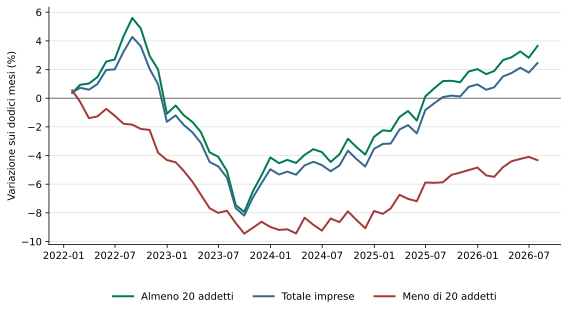
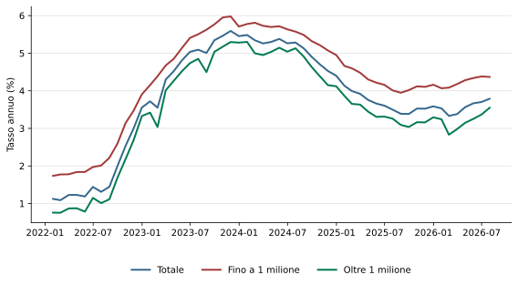
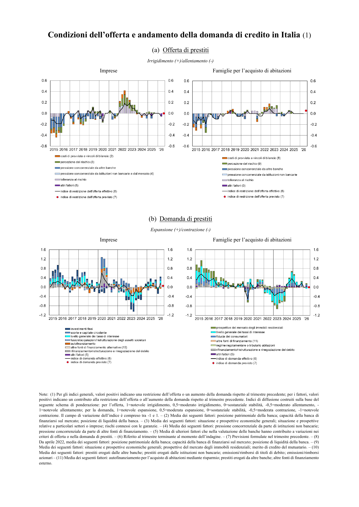
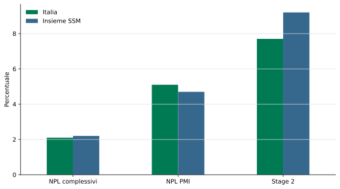

Condizioni del credito e settore bancario
Un approfondimento documentato a partire dal DPFP 2026
Paolo Volterra ![]()
Italiano. Il Documento Programmatico di finanza pubblica 2026 descrive una ripresa del credito alle imprese accompagnata da un nuovo aumento del costo dei finanziamenti e da differenze rilevanti per dimensione e settore. L’approfondimento riproduce integralmente la sezione I.2.5 e ne sviluppa i quattro passaggi con dati della Banca d’Italia, della Banca centrale europea, dell’OCSE e di Cerved Rating Agency. La crescita aggregata dei prestiti convive con una contrazione per le imprese con meno di 20 addetti, mentre la qualità complessiva degli attivi bancari resta buona ma è relativamente meno favorevole nel portafoglio PMI.
English. Italy’s 2026 Public Finance Policy Document describes a recovery in corporate lending alongside a renewed increase in borrowing costs and substantial differences by firm size and sector. This study reproduces Section I.2.5 in full and expands its four main passages using data from the Bank of Italy, the European Central Bank, the OECD and Cerved Rating Agency. Aggregate loan growth coexists with a contraction for firms with fewer than 20 employees, while overall bank asset quality remains sound but is comparatively weaker in the SME portfolio.
credito alle imprese, PMI, banche, tassi di interesse, qualità del credito, Italia
1 Quadro generale
La sezione I.2.5 del Documento Programmatico di finanza pubblica 2026 riunisce quattro aspetti che devono essere letti insieme: quantità di credito, prezzo dei nuovi finanziamenti, comportamento di domanda e offerta e solidità dei bilanci di imprese e banche [1]. L’espansione dell’aggregato non implica infatti che il credito cresca per tutte le classi dimensionali. Allo stesso modo, una buona qualità complessiva degli attivi bancari può convivere con un rischio relativamente maggiore nel portafoglio delle piccole e medie imprese.
La letteratura economica interpreta questa differenza come un tratto strutturale del mercato del credito. Le imprese minori tendono a dipendere maggiormente dalle banche, dispongono di meno fonti alternative e affrontano linee più brevi, maggiore ricorso alle garanzie e spread più elevati [2].1
2 Credito e costo dei nuovi finanziamenti
2.1 Testo del DPFP
Nei mesi più recenti il credito bancario al settore privato ha continuato a espandersi, e a ritmi più sostenuti per le imprese. A luglio 2026 i prestiti alle società non finanziarie sono aumentati del 4,1 per cento sui dodici mesi, dal 2,8 per cento di marzo, nonostante una temporanea decelerazione in giugno. La crescita di quelli alle famiglie è rimasta sostanzialmente stabile intorno a valori leggermente superiori al 2,5 per cento. Il costo del credito ha mostrato una tendenza alla risalita, anche se con andamenti differenziati. [1]
Note 59–60 del DPFP. La fonte è Banche e moneta: serie nazionali della Banca d’Italia e le serie sui prestiti sono corrette per cartolarizzazioni e altre cessioni. Tra marzo e luglio il tasso sui nuovi prestiti alle società non finanziarie è salito dal 3,4 al 3,8%, risultando più elevato per i finanziamenti fino a un milione di euro. Il tasso annuo effettivo globale sui nuovi mutui alle famiglie è salito dal 3,8% di marzo al 4,0% in maggio ed è tornato in luglio al livello iniziale, mentre quello sul credito al consumo è rimasto intorno al 10,4% [1].
2.2 La composizione per dimensione
La crescita del 4,1% è una misura corretta per cartolarizzazioni e cessioni e riguarda le società non finanziarie. Una seconda tavola della Banca d’Italia consente di osservare gli stock di prestiti, esclusi pronti contro termine e sofferenze, distinguendo le imprese con meno di 20 addetti da quelle più grandi.2 Le due statistiche hanno perimetri diversi e non devono coincidere; la seconda mostra però con chiarezza chi partecipa alla ripresa [3].
| Classe dimensionale | Stock (miliardi di euro) | Variazione annua (%) |
|---|---|---|
| Almeno 20 addetti | 570,2 | 3,65 |
| Totale imprese | 662,8 | 2,45 |
| Meno di 20 addetti | 92,6 | −4,33 |
In parole semplici: il credito cresce per le imprese con almeno 20 addetti e diminuisce per quelle più piccole. La crescita dell’aggregato è quindi concentrata nella componente dimensionale maggiore.

In parole semplici: dalla fine del 2024 le due classi dimensionali prendono direzioni opposte. Nel luglio 2026 la distanza fra la crescita delle imprese con almeno 20 addetti e quella delle imprese più piccole raggiunge quasi otto punti percentuali.
2.3 Il differenziale per importo
Il tasso medio del 3,79% sui nuovi prestiti di luglio 2026 nasconde un differenziale significativo. Le operazioni fino a un milione costano il 4,37%, contro il 3,55% di quelle oltre un milione, con uno scarto di circa 82 punti base [3]. La classe d’importo non coincide con la dimensione dell’impresa, ma descrive una penalizzazione economica delle operazioni minori.

In parole semplici: i finanziamenti più piccoli costano sistematicamente più di quelli superiori a un milione di euro. Nel 2026 il divario torna ad ampliarsi mentre risale il costo medio del credito.
3 Domanda e offerta di credito
3.1 Testo del DPFP
Nell’indagine sul credito bancario relativa al secondo trimestre, le banche italiane hanno segnalato un lieve allentamento dei criteri di offerta dei prestiti alle imprese, per la prima volta in un anno e in controtendenza rispetto all’irrigidimento segnalato nell’area dell’euro. Per le famiglie, le banche hanno indicato criteri invariati sui mutui e un ulteriore inasprimento sul credito al consumo. Le banche hanno inoltre riferito una ripresa della domanda di credito delle imprese, dopo la flessione del trimestre precedente. Secondo gli intermediari, la domanda è stata sostenuta principalmente dalle esigenze di finanziamento di scorte e capitale circolante, dalle operazioni di rifinanziamento, ristrutturazione e rinegoziazione del debito. Vi ha contribuito anche l’anticipo delle richieste in previsione di ulteriori aumenti del costo dei finanziamenti. Per il terzo trimestre le banche si attendevano criteri invariati e un lieve rafforzamento della domanda di credito delle imprese, in particolare nel comparto manifatturiero. I rischi di rifinanziamento restano nel complesso circoscritti, ma differenziati tra categorie di imprese. [1]
Nota 61 del DPFP. L’analisi utilizza l’Indagine sul credito bancario nell’area dell’euro: principali risultati per le banche italiane della Banca d’Italia e la corrispondente indagine della Banca centrale europea per il confronto con l’area dell’euro [4].
3.2 Cosa misurano i saldi dell’indagine
L’indagine non misura euro erogati, ma la percentuale netta delle banche che segnala un cambiamento rispetto al trimestre precedente. Per l’offerta i valori positivi indicano irrigidimento e quelli negativi allentamento; per la domanda i valori positivi indicano espansione. Nel secondo trimestre 2026 l’offerta alle imprese si allenta lievemente, mentre la domanda torna positiva soprattutto per scorte, capitale circolante e ristrutturazione del debito [4].

In parole semplici: le banche dichiarano di avere allentato leggermente i criteri, mentre le imprese chiedono più credito. La nuova domanda serve soprattutto a finanziare il ciclo operativo e a riorganizzare debiti esistenti, più che a una netta accelerazione degli investimenti fissi.
4 Bilanci delle imprese ed eterogeneità del rischio
4.1 Testo del DPFP
Nel complesso, le imprese italiane affrontano l’attuale fase con bilanci più solidi rispetto agli anni precedenti, grazie al miglioramento della redditività, alla riduzione della leva e alla maggiore capacità di generare cassa. Tale situazione sottende tuttavia una significativa eterogeneità, con persistenti vulnerabilità tra le imprese più indebitate e con minore capacità di coprire gli oneri finanziari. L’eterogeneità si riscontra anche a livello settoriale e per dimensione d’impresa. [1]
Note 62–64 del DPFP. Il quadro dei bilanci rinvia ai Conti finanziari della Banca d’Italia del 16 luglio 2026 [5]. Nel primo semestre le banche hanno lievemente irrigidito i criteri soltanto per la manifattura ad alta intensità energetica, mentre l’allentamento del secondo trimestre ha interessato le grandi imprese ma non le piccole e medie imprese. Le pressioni sono maggiori per le imprese minori e nei comparti in cui aumento dei costi energetici, debolezza della domanda, maggiore fabbisogno di capitale circolante e rinnovo del debito a condizioni meno favorevoli si sovrappongono. Chimica, carta e stampa e trasporti presentano il maggiore incremento atteso del rischio di credito [4], [6].
4.2 Una media più solida, una dispersione maggiore
Cerved stima che la probabilità media di default delle imprese italiane salga dal 4,7% al 5,0% nello scenario di base e al 5,7% nello scenario avverso. Il punto rilevante non è l’avvio di una crisi sistemica, che lo studio considera poco probabile, ma l’aumento della distanza tra soggetti resilienti e vulnerabili [6].
Il quadro del 2026 prolunga una tendenza già visibile nel biennio precedente. L’OCSE rileva che nel 2023–2024 la contrazione dei prestiti alle piccole e medie imprese è stata più intensa di quella osservata per le grandi imprese e che il successivo allentamento delle politiche di offerta ha beneficiato soprattutto queste ultime [7]. Il miglioramento medio dei bilanci e la selettività dimensionale del credito sono quindi due aspetti compatibili della stessa fase.
5 Qualità degli attivi e solidità bancaria
5.1 Testo del DPFP
La qualità degli attivi delle banche significative italiane è rimasta complessivamente buona. Nel secondo trimestre l’incidenza lorda dei prestiti deteriorati era pari al 2,1 per cento, in aumento di 0,1 punti percentuali rispetto al periodo precedente, lievemente inferiore al 2,2 per cento dell’insieme delle banche significative sottoposte alla vigilanza europea. Il confronto era più favorevole per i prestiti alle famiglie e per quelli garantiti da immobili residenziali, mentre l’incidenza dei deteriorati sui finanziamenti alle PMI risultava più elevata della media di vigilanza (5,1 contro 4,7 per cento). Anche la quota dei prestiti in Stage 2, caratterizzati da un aumento significativo del rischio di credito senza essere ancora deteriorati, era inferiore a quella dell’aggregato europeo (7,7 contro 9,2 per cento). Nel secondo trimestre si è inoltre rafforzata la redditività delle banche significative italiane, con un rendimento del capitale proprio salito dal 14,7 al 14,9 per cento, superiore a quello dell’aggregato di vigilanza, mentre il CET1 ratio è aumentato dal 15,6 al 15,7 per cento, mantenendosi lievemente inferiore alla media europea, pari al 16,0 per cento. [1]
Note 65–66 del DPFP. I confronti provengono dalle Supervisory Banking Statistics della Banca centrale europea e riguardano le banche significative. Le serie utilizzate sono il rapporto tra prestiti deteriorati e prestiti al netto della liquidità presso banche centrali, il rapporto riferito alle piccole e medie imprese, il rendimento annualizzato del capitale proprio e il coefficiente di capitale primario di classe 1 [8].
Nella tabella, NPL indica i prestiti deteriorati (non-performing loans), SSM l’insieme degli intermediari sottoposti al Meccanismo di vigilanza unico europeo, ROE il rendimento del capitale proprio e CET1 il capitale primario di classe 1. I crediti in Stage 2 sono esposizioni ancora regolari per le quali il rischio di credito è aumentato significativamente dopo la concessione.
In parole semplici: il sistema bancario italiano presenta meno deteriorati e meno crediti in Stage 2 rispetto all’insieme sottoposto alla vigilanza europea. Il confronto è però meno favorevole quando si osservano specificamente i finanziamenti alle piccole e medie imprese.

In parole semplici: le banche italiane hanno una qualità complessiva degli attivi leggermente migliore della media di vigilanza, ma un’incidenza dei deteriorati più alta nel portafoglio delle piccole e medie imprese. La differenza sfavorevole riguarda dunque il portafoglio PMI e non l’indicatore complessivo della qualità degli attivi.
6 Sintesi
La ripresa del credito alle imprese nel 2026 è reale ma concentrata. A luglio i prestiti alle imprese con almeno 20 addetti aumentano del 3,65% sui dodici mesi, mentre quelli alle imprese con meno di 20 addetti diminuiscono del 4,33%. Anche il prezzo segnala una differenza: le nuove operazioni fino a un milione costano circa 82 punti base più di quelle maggiori.
L’indagine sul credito descrive contemporaneamente un lieve allentamento dell’offerta complessiva e una ripresa della domanda legata a capitale circolante e rifinanziamento. Le note del DPFP precisano che l’allentamento ha riguardato le grandi imprese e non le piccole e medie imprese. La distinzione dimensionale non è quindi un dettaglio statistico, ma la condizione necessaria per interpretare correttamente l’espansione dell’aggregato.
La buona redditività e patrimonializzazione delle banche rendono meno plausibile che la selettività osservata derivi da una debolezza generalizzata degli intermediari. Resta tuttavia un portafoglio PMI con deteriorati superiori al confronto europeo e una distribuzione del rischio sempre più differenziata per dimensione e settore.
7 Riferimenti
Nota metodologica
Questo documento nasce dall’interazione di tre componenti. L’autore definisce le domande, esercita il giudizio critico e assume la responsabilità scientifica ed editoriale del risultato. Strumenti di intelligenza artificiale generativa sono impiegati a supporto della ricerca bibliografica, della lettura, della sintesi, della riorganizzazione argomentativa e della revisione del testo. Un’infrastruttura open source sviluppata dall’autore automatizza il reperimento, l’armonizzazione e il controllo dei dati dalle fonti statistiche ufficiali, e mantiene l’elaborazione documentata e riproducibile.
Le fonti sono pubblicamente accessibili e citate con la loro denominazione ufficiale; l’analisi è pertanto integralmente auditabile e replicabile da terzi a partire da esse. Le tabelle e i grafici sono elaborazioni dell’autore: calcoli, aggregazioni, trasformazioni e scelte di rappresentazione sono attribuibili all’autore e non agli enti produttori dei dati.
La responsabilità per le fonti utilizzate, le analisi condotte, le elaborazioni effettuate, le interpretazioni proposte e le conclusioni formulate resta interamente in capo all’autore. L’intelligenza artificiale è stata impiegata come ambiente di supporto cognitivo ed editoriale, non come fonte primaria, autore autonomo o sostituto del giudizio critico.
Note
Lo studio citato utilizza dati creditizi statunitensi. È impiegato come riscontro comparativo dei meccanismi associati alla dimensione d’impresa, non come evidenza diretta riferita all’Italia.↩︎
La soglia dei 20 addetti è una classificazione statistica della Banca d’Italia e non coincide con la definizione europea di piccola e media impresa, che considera anche addetti, fatturato e totale di bilancio. Nel documento questa serie è pertanto descritta come riferita alle imprese minori, non all’intero universo delle PMI.↩︎